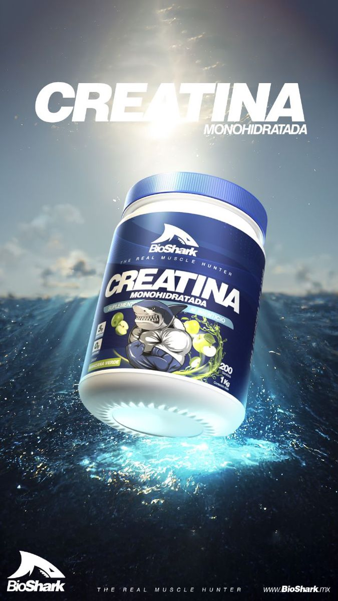
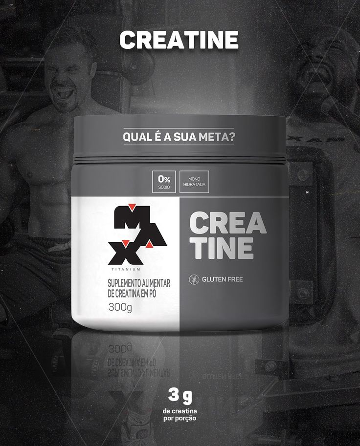
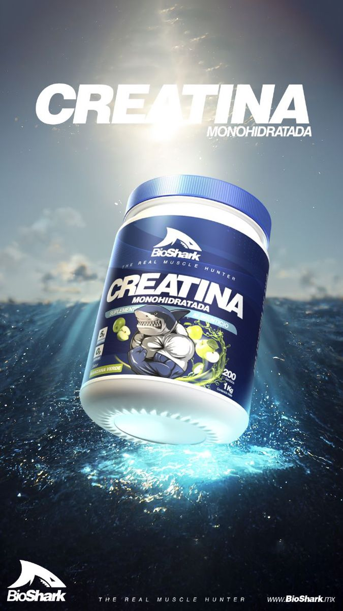
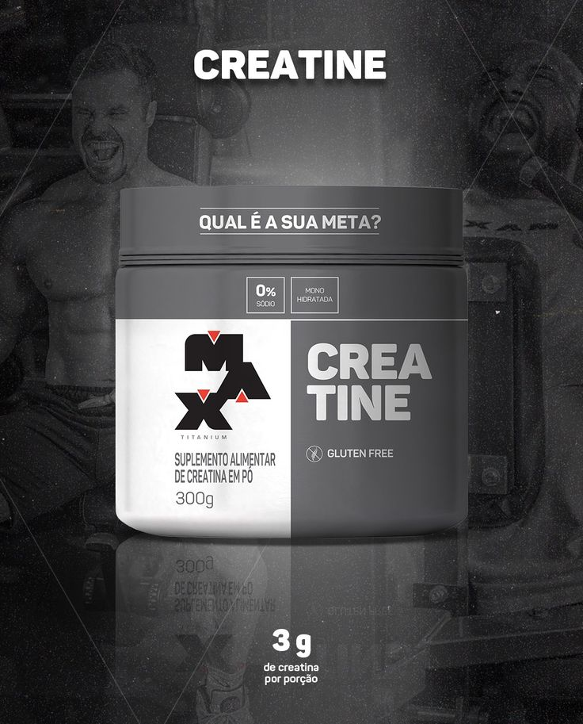
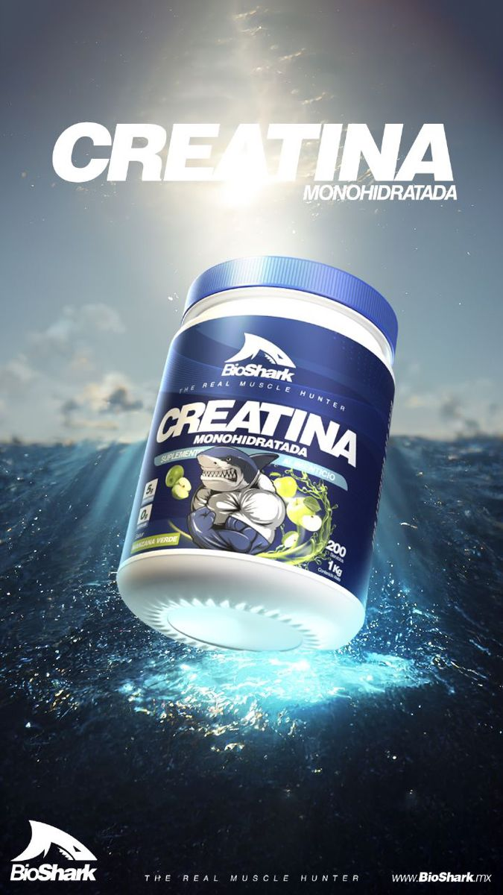
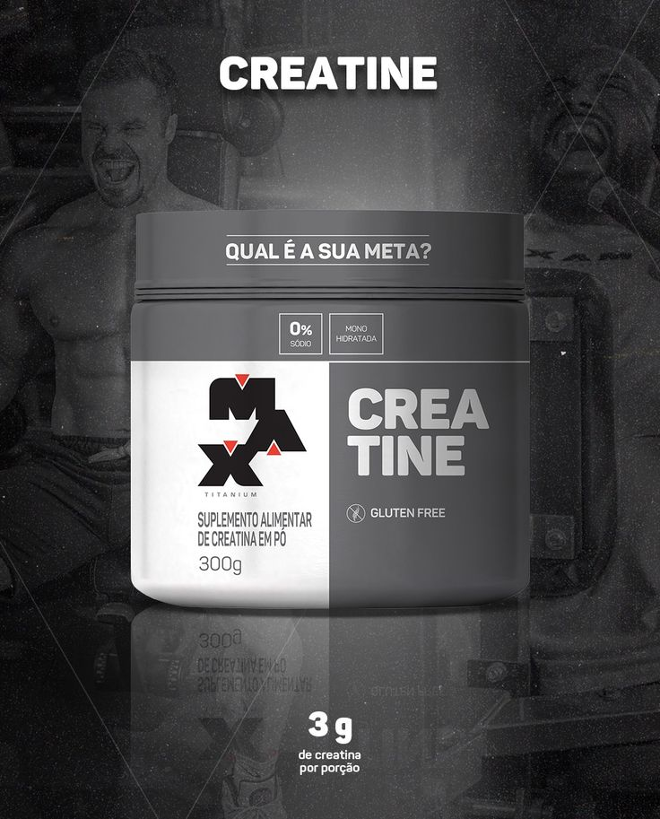

Embora a creatina seja mais conhecida por seus benefícios para a musculação e o desempenho atlético, ela também pode ter efeitos positivos no cérebro. Estudos sugerem que a creatina pode melhorar a função cognitiva, especialmente em tarefas que exigem alta concentração e rapidez. Isso acontece porque a creatina ajuda a fornecer energia para as células do cérebro, além de reduzir a fadiga mental. Então, além de turbinar seus músculos, a creatina também pode dar aquele “up” na sua mente!


A creatina é um dos suplementos mais utilizados por atletas de elite, e nomes como Ramon Dino, Renato Cariane e Felipe Franco não ficam de fora dessa escolha estratégica. Esses campeões de fisiculturismo confiam na creatina para potencializar seus treinos, melhorar o desempenho e acelerar a recuperação muscular. Se esses atletas de altíssimo nível utilizam creatina para alcançar seus objetivos, imagina o impacto que ela pode ter no seu treino também!